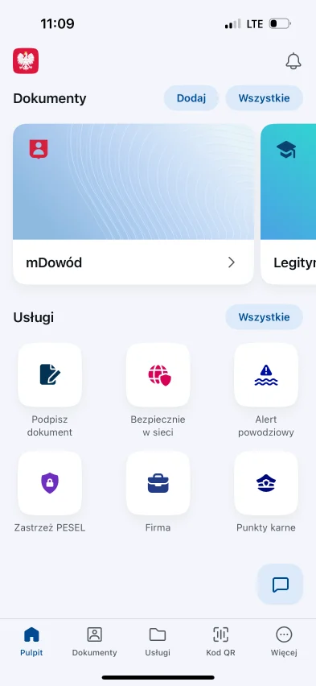
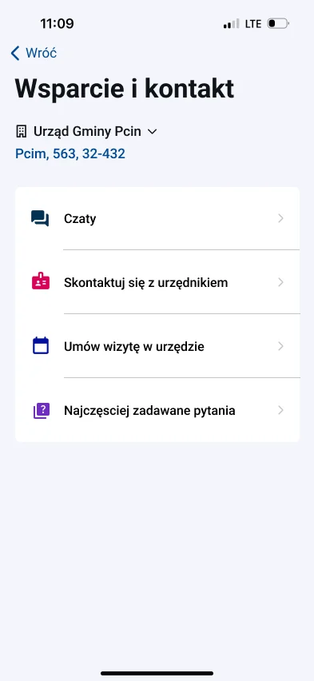
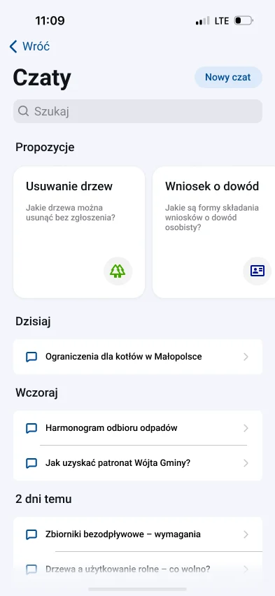
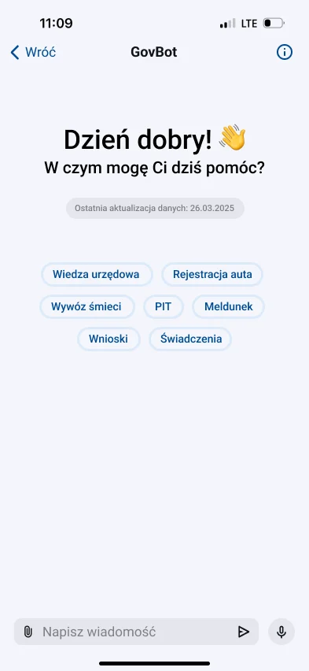
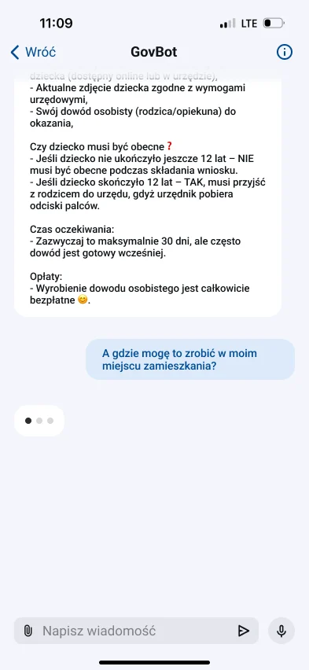
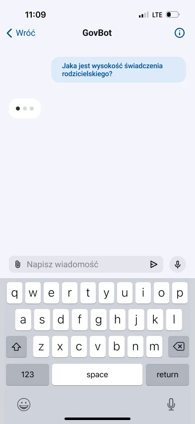
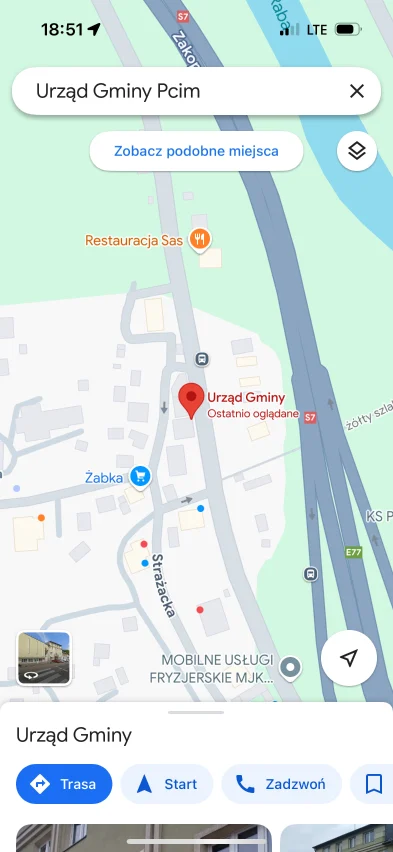

1st place · AI Place Challenge 2025 · Team lead & AI lead
GovBot: an AI chatbot for mObywatel
GovBot lives inside mObywatel, the Polish government app, and answers questions about official matters for your own municipality: what to prepare, where to go and when the office is open. Our team won 1st place in the AI Place Challenge, set by the Ministry of Digital Affairs.
The challenge
Official procedures are spread across portals, and every municipality works a little differently.
What we built
An AI assistant inside mObywatel that combines national rules with the user's own office, built in n8n.
Signature move
Every answer ends where you live: the right office, address, room and opening hours.

On stage at Econverse Fuse 2025, Warsaw
Concept prototype for the AI Place Challenge, not an official mObywatel feature. Screens are in Polish, as in the app.
How we worked
A hackathon-sized design-thinking loop, from the brief to a working demo.
- 01Empathise
Started from the brief set by the Ministry of Digital Affairs and the questions residents actually bring to a municipal office: removing a tree, an ID card for a child, the waste schedule, rules for old boilers.
- 02Define
People don't lack information. They lack the right piece of it, for their own office, at the moment they need it.
- 03Ideate
Put the assistant where people already are, inside mObywatel's Support and contact, and make it local by default.
- 04Prototype
A clickable Figma prototype in mObywatel's visual language, with the assistant's logic built as n8n workflows on an LLM.
- 05Test
Walked the jury through real questions on stage at Econverse Fuse 2025. The jury gave it 1st place.
Who it is for
Three residents, one shared problem: the answer exists, but not for their own office.
“I just want to know what to bring, so I go to the office once.”
Goals
- Know the steps before leaving home
- Find the right office and hours
- Do it online if she can
Frustrations
- Contradicting answers online
- Phone lines that are always busy
- A wasted trip for a missing document
“I'd rather ask someone than click through forms.”
Goals
- Ask in his own words
- Hear the answer, not read it
- Reach a real official when needed
Frustrations
- Small text and long pages
- Official jargon
- Not knowing which office handles what
“Where do I even register, and when is the bin collected?”
Goals
- Sort out registration fast
- Learn local rules once
- Keep it on the phone
Frustrations
- Every municipality has its own rules
- Information scattered across sites
- Office hours that don't fit work
Proto-personas built for the challenge from typical questions residents bring to a municipal office. They describe patterns, not real people.
Point of view
Point of viewA resident dealing with an official matter needs one clear answer for their own municipality, because general information sends them to the wrong office or back home for a missing document.
- How might we give people an answer for their own office, not for Poland in general?
- How might we make official answers as easy to scan as a checklist?
- How might we help people who would rather speak than type?
Value proposition
Value Proposition Canvas for the resident.
Value map
Products & services
- GovBot inside mObywatel
- Topic shortcuts and chat history
- Voice messages
Pain relievers
- Answers tied to the user's own municipality
- Office, room, phone and hours in the answer
- Structured answers: who, where, what to bring, fees
Gain creators
- Date of the last data update on screen
- A route to the office on the map
- Hand-off to an official or a booked visit
Customer profile · resident
Jobs to be done
- Find out what a procedure needs
- Get to the right office
- Get it done in one visit
Pains
- Searching several sites
- Busy phone lines
- Missing a document and coming back
Gains
- Feeling prepared
- Less time off work
- Confidence the answer is current
An official matter, mapped
The lowest points of the journey are where GovBot answers.
Journey · Ewa
Notice
Her child needs an ID card
“How does this work for kids?”
OpportunityAsk in mObywatel, where her documents already are
Search
Looks through several websites
“Every site says something else.”
OpportunityOne answer from official sources
Call
Tries the office phone line
“Nobody picks up.”
OpportunityChat that answers at any hour
Prepare
Collects the documents
“Do I have everything?”
OpportunityA checklist: what to bring, does the child come
Go
Finds the right office
“Which building, which room?”
OpportunityAddress, room and hours of her own office
Done
Submits the application
“One visit, done.”
OpportunityRoute on the map and a booked visit
The flow, in the app
From the mObywatel home screen to the door of the right office.







Key design decisions
Live where people already are
GovBot sits in mObywatel's Support and contact, next to contacting an official and booking a visit, instead of being one more app to install.
Local by default
The chosen municipality sits at the top of Support and contact, and answers use its own office, room, phone and opening hours.
Answers shaped like a checklist
Official answers follow the same headings every time: who can apply, where, what to bring, waiting time and fees, so they can be scanned in seconds.
Show how fresh the data is
The greeting shows when the data was last updated, because an outdated official answer is worse than none.
Voice in and out
Voice messages let people ask and listen instead of typing and reading.
Always a way to a person
Contacting an official or booking a visit stays one tap away from the chat.
How it is built
| Part | What it uses |
|---|---|
| Assistant logic | n8n workflows on an LLM |
| Knowledge | National procedures plus the chosen municipality's own data |
| Prototype | Figma, clickable, in mObywatel's visual language |
| My role | Team lead and AI lead |